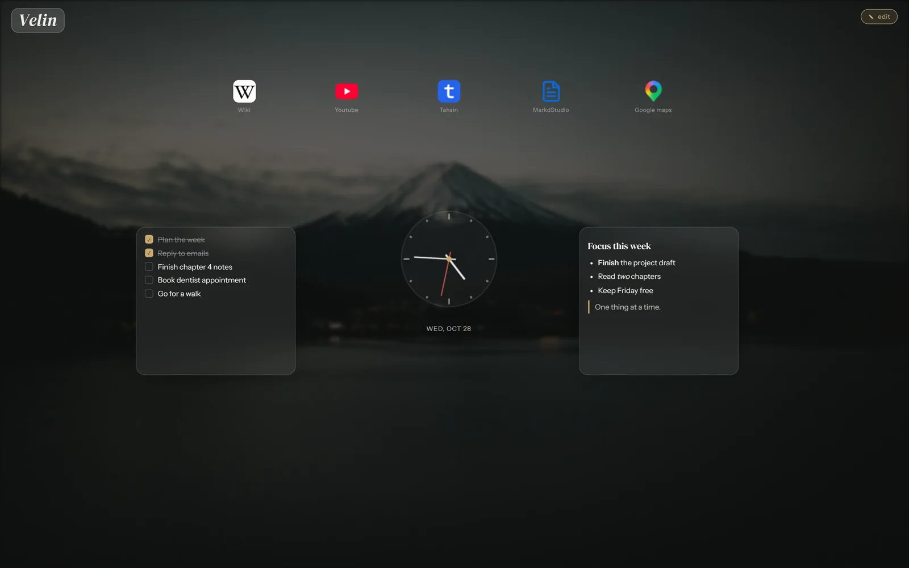
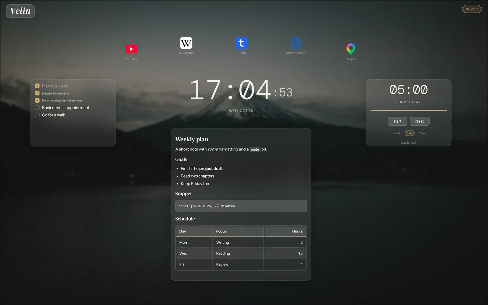

A free new tab page for Chrome, Edge and Brave
Turn your new tab into
a page you actually use
Velin puts widgets, markdown notes, bookmarks and a background you pick on every new tab. It saves in your browser, so there is no account to make and no server to trust.
The source is public on GitHub, so you can read exactly what it does.

Most new tabs are either empty or crowded
A blank tab gives you nothing to work with. A crowded one fills the page with things you never picked. Velin sits in between.
What you usually get
A search box and a grid of tiles chosen for you, or a white page you have to leave before you can do anything.
What Velin gives you
An empty canvas that you fill with only what you reach for: a clock, a todo list, a note, the three sites you open every morning.
Your clock, your notes and your links, laid out the way you think. Saved on your device, with nothing to sign up for.
Set it up once and it stays put
Five kinds of widget, a markdown editor and a background of your choice, all on the page you already open dozens of times a day.
Put things exactly where you reach for them
Clock, bookmarks, todo, notes and a pomodoro timer. Drag a widget by its header, resize it from the corner, and it stays where you left it. The pomodoro keeps running across tabs.

Write things down without leaving the tab
A note widget is a small markdown editor with a live preview. Headings, bold and italic, code, links, lists and tables all work, and notes always show the rendered version in view mode.

Make it look like yours
Pick a solid color or a gradient, or upload your own image up to 8 MB and tune its brightness and blur with sliders. Four themes switch between dark, light, glass, and black and white.

- Safe by defaultEvery tab opens in view mode, so nothing moves by accident. Press E when you want to rearrange.
- Free text anywhereDrop a text box anywhere on the canvas, then set its size, rotation, weight and color.
- Take it with youExport your whole setup to one JSON file and import it on another browser or computer.
- Small enough to readThe app is four files with no build step. Open
app.htmland it works.
Three steps from download to your own tab
Velin is not on the Chrome Web Store yet, so you load it from a folder. The guide shows every click.
- 1
Download and load it
Download the extension zip from the latest release, unzip it, then load the folder from your browser's extensions page with developer mode switched on.
- 2
Open a new tab
That is Velin. Click edit at the top, or press E, and add your first widget from the toolbar.
- 3
Arrange it and leave it
Everything saves on its own. Switch back to view mode and your layout stays exactly where you put it.
Would rather not install anything? Open the web version, or point your new tab at it in any browser.
Everything stays in your browser
Velin has no accounts and no server of its own, so there is nothing to sign into and nothing for it to leak. Here is what that means in practice.
Stored on your device
Widgets, notes, bookmarks and background images live in your browser's IndexedDB. Clearing site data or removing the extension erases them, so export first.
Two outside requests
Fonts load from Google Fonts, and bookmark icons are looked up through DuckDuckGo's icon service, then the site's own favicon as a fallback. Nothing you write is sent anywhere.
Source you can read
The code is public on GitHub and the app is only four files, so you can check what it does instead of taking this page's word for it.
Questions people ask first
Do I need an account?
No. Velin has no accounts and no server. Your setup is saved in your browser, on your device.
Why do I have to turn on developer mode?
Velin is not on the Chrome Web Store yet, so you load it from a folder on your computer. Your browser may show a developer mode notice, which is expected until Velin is listed.
Does it work in Firefox or Safari?
Not as an extension yet. You can still use the web version. Firefox needs a new tab extension that points to it, and Safari can open it for new tabs from its own settings. The guide has the steps for each.
What happens to my data if I clear my browser data or remove the extension?
It is erased, because it lives in the browser. Export your setup to a JSON file first, then import that file wherever you want your layout back.
Can I move my layout to another computer?
Yes. Export downloads one JSON file with your theme, background, widgets, notes and bookmarks. Import it on the other browser and your setup replaces whatever was there. The extension and the web version keep separate storage, so export and import is also how you move between them.
What leaves my browser?
Two things. Fonts load from Google Fonts, and bookmark icons are looked up through DuckDuckGo's icon service, then the site's own favicon as a fallback. Your widgets, notes and bookmarks are never sent anywhere. The message form at the bottom of this page is the one exception, and it only sends what you type into it.
Is Velin open source?
The source is public on GitHub and you are welcome to read it and contribute. It is not open source, though. Copying the code into other projects or redistributing it needs permission.
Does the pomodoro timer keep running when I switch tabs?
Yes. Its state is shared across tabs, so starting it in one tab keeps it running while you check another. Allow notifications if you want an alert when a session ends.
Was Velin built with AI?
Yes. Velin is made by Tahsin with help from AI (Claude).
How do I report a bug or ask for a feature?
Use the message form at the bottom of this page, or open an issue on GitHub.
Get Velin on your next new tab
Try it for a day. If it is not for you, remove the extension and your new tab goes back to your browser's default.
- Free to use
- No account
- Export your setup any time